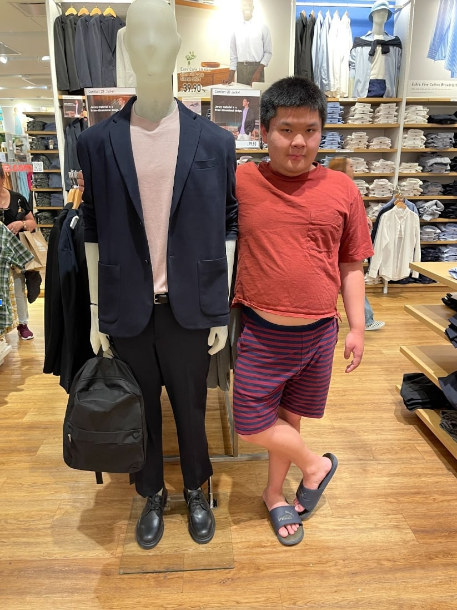
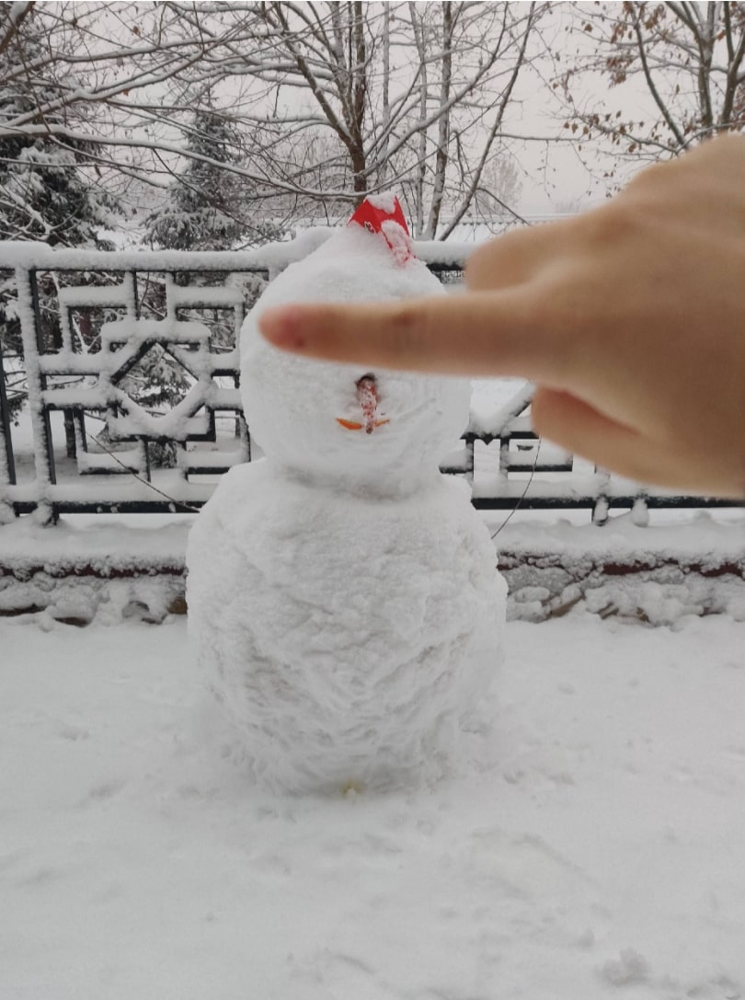

Part 1
I quite like this image because I find it really endearing. My brother and I were at the Uniqlo in my hometown’s mall. Every once in a while, he’ll see a mannequin that he wants to pose and take a picture next to. I always wonder what drives him to pick particular mannequins over others.
All the images in my collection are of my younger brother. Every once in a while, he’ll ask me to take a picture of him doing something. He has autism, so there are certain subjects he has a very keen interest in and will always ask me to take a picture of him doing them. My brother loves to look back on these images and almost relive what he felt.
I think these photos are a great representation of our dynamic and relationship. We’re quite close and have a lot of fun with each other. He sometimes feels embarrassed to share things he likes to do with others, but is comfortable enough with me to do so.
Part 2
This is an image of a snowman. I think the most interesting thing about this image is obviously the finger being used to cover the snowman’s eyes. I think that I spent a lot of time wondering why the finger is there. Is there something he is hiding? Did something go wrong with its eyes? It’s interesting because it almost makes the snowman more “snow” than “man” without the eyes. Looking at the snowman without its eyes reminds me of a concept I learned in psychology. They tested newborns to see if they preferred three shapes that were organized in the shape of two eyes and a mouth (like a face) or in a different orientation. They found that the babies had a much bigger preference for the orientation resembling a face. All that to say, it’s interesting that he decided to cover the part of the snowman that humanizes it.